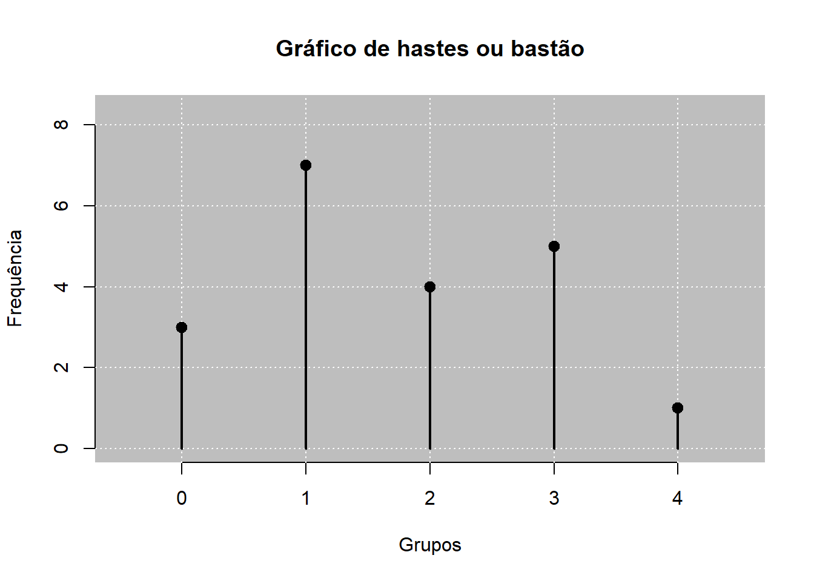
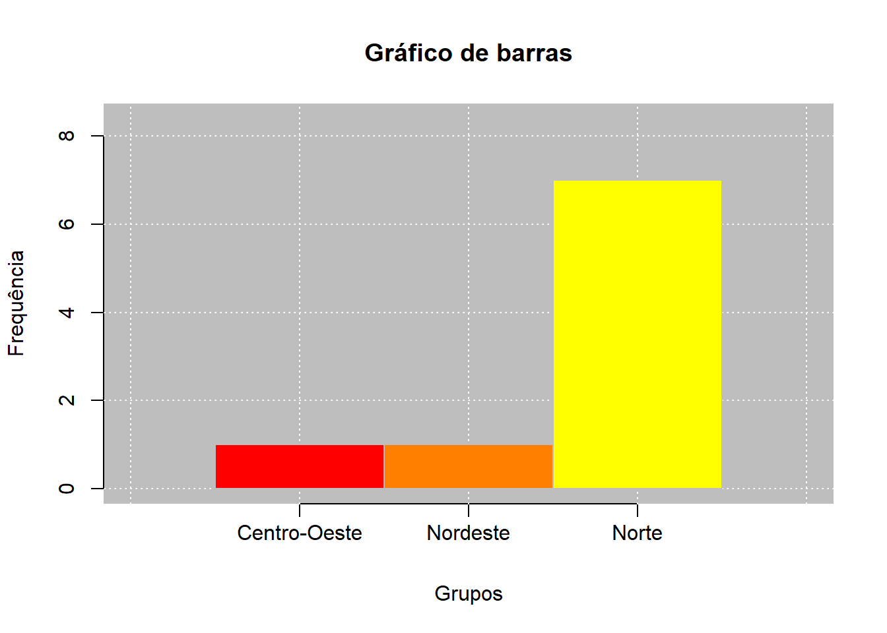
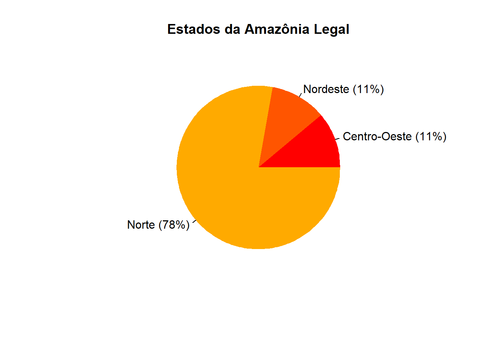
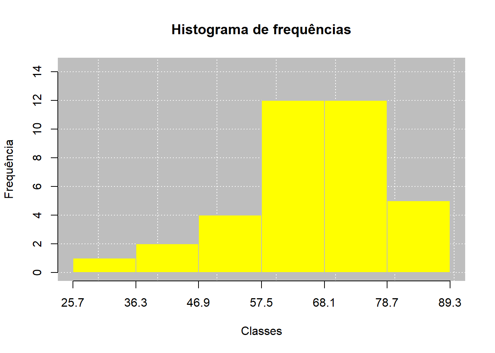
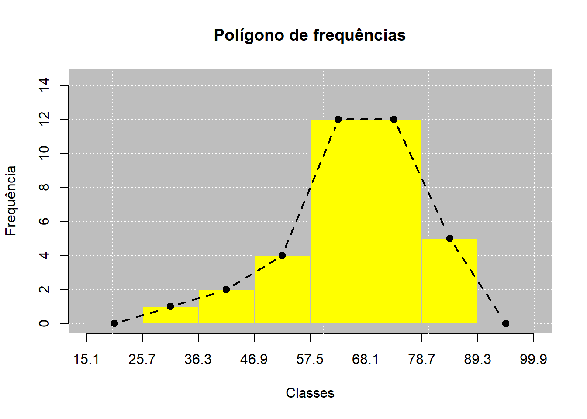
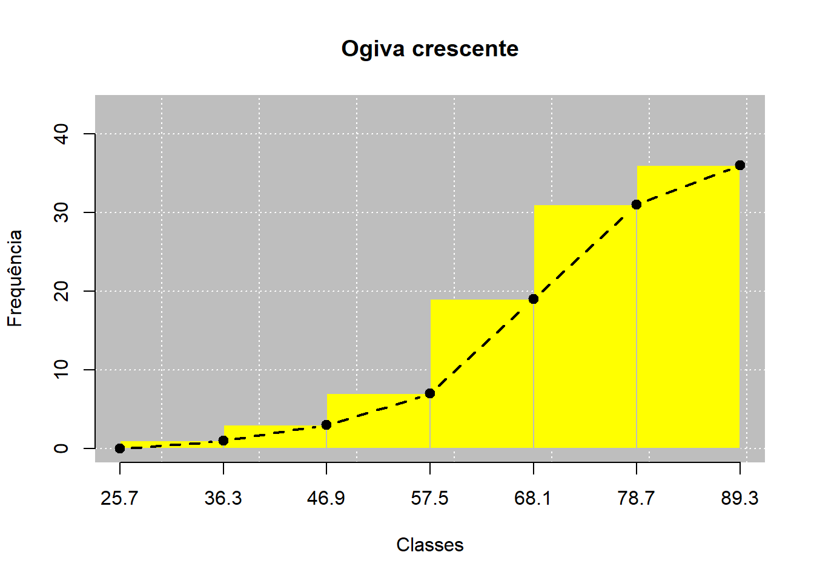
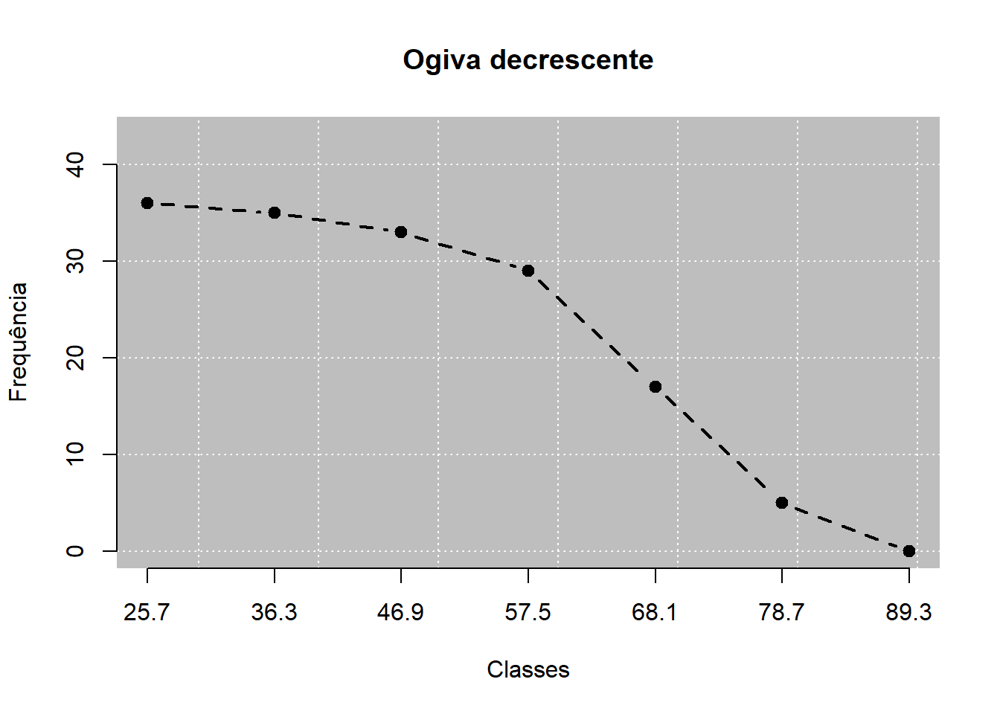
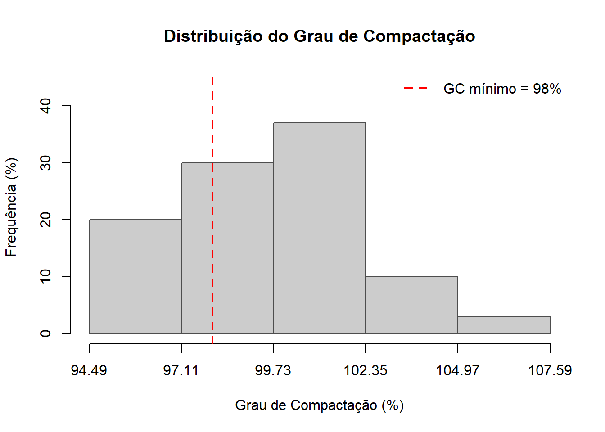

Tabela de frequência
Tipo de variável: continuous
Classes Fi PM Fr Fac1 Fac2 Fp Fac1p Fac2p
1 25.7 |--- 36.3 1 31.0 0.03 1 36 3 2.78 100.00
2 36.3 |--- 46.9 2 41.6 0.06 3 35 6 8.33 97.22
3 46.9 |--- 57.5 4 52.2 0.11 7 33 11 19.44 91.67
4 57.5 |--- 68.1 12 62.8 0.33 19 29 33 52.78 80.56
5 68.1 |--- 78.7 12 73.4 0.33 31 17 33 86.11 47.22
6 78.7 |--- 89.3 5 84.0 0.14 36 5 14 100.00 13.89
==============================================
Classes: Agrupamento de classes
Fi: Frequência absoluta
PM: Ponto médio
Fr: Frequência relativa
Fac1: Frequência acumulada (abaixo de)
Fac2: Frequência acumulada (acima de)
Fp: Frequência percentual
Fac1p: Frequência acumulada percentual (abaixo de)
Fac2p: Frequência acumulada percentual (acima de) 

Relatório de Aula Prática 01
Estatística e Probabilidade
Prof. Ben Dêivide (DEFIM/CAP/UFSJ)
1 📌 Introdução
A linguagem R é uma ferramenta voltada à programação, manipulação e análise de dados, que oferece uma ampla gama de recursos para organizar e analisar informações através de métodos estatísticos.
Este relatório apresenta uma sequência de atividades que parte dos fundamentos da linguagem R e avança até sua aplicação na análise estatística de dados relacionados à geotecnia. O trabalho está organizado em três etapas principais, buscando estabelecer uma relação entre os conhecimentos de programação, os conceitos de estatística descritiva e sua aplicação prática.
Na primeira etapa, será realizada uma introdução à linguagem R, fundamentada no curso R Básico 2024 – Sintaxe e Semântica, ministrado pelo professor Ben Dêivide. Serão apresentados os principais conceitos abordados no curso, incluindo o funcionamento da linguagem e do ambiente RStudio, objetos, estruturas de dados, funções, estruturas de controle, pacotes, ambientes e interfaces.
A segunda etapa contemplará a revisão dos fundamentos da estatística descritiva, com base no livro Estatística para Análise Exploratória de Dados e Experimentos Computacionais (EPAEC). Além dos conteúdos apresentados nesse material, serão incluídos os conceitos de assimetria e curtose, complementando as medidas utilizadas para descrever o comportamento de uma distribuição de dados.
Por fim, a terceira etapa terá caráter prático e abordará a aplicação dos conhecimentos estudados a um banco de dados relacionado à geotecnia. Com o auxílio do pacote leem, os dados serão organizados, tabulados e representados graficamente, além do cálculo de medidas de posição, dispersão, assimetria e curtose. Os resultados obtidos serão analisados e discutidos, buscando compreender os valores fornecidos pelas ferramentas computacionais e os procedimentos estatísticos envolvidos em sua obtenção.
2 🎯 Objetivos
2.1 Objetivo geral
Compreender os fundamentos da linguagem R e da Estatística Descritiva e aplicá-los na análise de um banco de dados, utilizando o pacote leem como ferramenta computacional para organização, representação, descrição e interpretação dos dados.
2.2 Objetivos específicos
- Apresentar os principais fundamentos da linguagem R, abordando aspectos relacionados à sua sintaxe e semântica, estruturas de dados, funções, estruturas de controle, pacotes, ambientes e interfaces;
- Revisar os fundamentos da Estatística Descritiva, incluindo população, amostra, classificação das variáveis e técnicas de somatório;
- Apresentar os procedimentos de organização e representação tabular dos dados, considerando distribuições de frequência e agrupamento em classes;
- Descrever as principais formas de representação gráfica dos dados, considerando sua aplicação de acordo com a natureza das variáveis;
- Apresentar e interpretar as principais medidas de posição e dispersão, compreendendo seus procedimentos de cálculo e as informações fornecidas por cada medida;
- Abordar os conceitos e as medidas de assimetria e curtose, complementando a análise das características de uma distribuição;
- Utilizar o pacote leem para realizar a análise descritiva de uma base de dados;
- Organizar, tabular e representar graficamente os dados selecionados, além de calcular suas medidas de posição, dispersão, assimetria e curtose;
- Analisar e discutir os resultados obtidos, relacionando as medidas calculadas e as representações produzidas às características observadas no conjunto de dados.
3 📚 Fundamentação Teórica
3.1 Fundamentos da Linguagem R
O R é uma linguagem e um ambiente de software livre e de código aberto, que se aplica de forma satisfatória à estatística e à análise de dados. A compreensão de seu funcionamento envolve dois conceitos importantes: sintaxe e semântica. A sintaxe está relacionada à forma como os comandos são escritos, enquanto a semântica corresponde ao comportamento produzido a partir da execução desses comandos.
O funcionamento da linguagem pode ser descrito a partir da conexão de diferentes elementos, como objetos, funções, estruturas de dados, estruturas de controle, ambientes, pacotes e interfaces. Esses recursos permitem armazenar informações, realizar operações, controlar a execução de procedimentos e ampliar as funcionalidades disponíveis no ambiente de programação.
3.1.1 R e RStudio
O R e o RStudio possuem funções distintas. O R corresponde à linguagem responsável pela interpretação e execução dos comandos, enquanto o RStudio é um Ambiente Integrado de Desenvolvimento (IDE) que fornece uma interface para facilitar a utilização da linguagem.
O RStudio reúne ferramentas como o console, o editor de scripts, o ambiente de objetos (Environment), o histórico de comandos (History) e áreas destinadas a arquivos, gráficos, pacotes e documentação. Essa organização permite escrever códigos, executá-los e acompanhar os objetos produzidos durante uma sessão de trabalho.
O console é o espaço no qual os comandos são enviados para execução. A partir do símbolo >, identifica-se que o R está disponível para receber uma nova instrução.
Além da execução direta no console, os comandos podem ser armazenados em scripts, normalmente identificados pela extensão .R. Os scripts permitem organizar e preservar o código utilizado, facilitando sua consulta e execução posterior. Comentários podem ser inseridos com o símbolo #, que permitem incluir informações sem que elas sejam interpretadas como comandos.
O R também utiliza um diretório de trabalho como referência para determinadas operações de leitura e gravação de arquivos. A função getwd() permite identificar o diretório atual, enquanto setwd() possibilita defini-lo. Já source() permite executar comandos armazenados em outro arquivo de script.
3.1.2 Princípios Fundamentais da Linguagem R
A estrutura da linguagem R pode ser compreendida a partir de três princípios fundamentais: objeto, função e interface.
O princípio do objeto está relacionado ao fato de que os elementos existentes no R podem ser tratados como objetos. Valores, vetores, matrizes, listas, funções e ambientes são exemplos de objetos que podem possuir diferentes características e estruturas.
O princípio da função estabelece que as operações realizadas no R estão relacionadas a chamadas de funções. As funções recebem informações por meio de seus argumentos, executam determinadas operações e podem produzir resultados. Dessa maneira, são um elemento central na manipulação dos objetos.
O princípio da interface corresponde à capacidade do R de se comunicar com outros programas, linguagens e tecnologias. Essa característica permite ampliar as possibilidades da linguagem e utilizar recursos desenvolvidos em outros ambientes.
3.1.3 Objetos, Atribuição e Estruturas de Dados
A atribuição permite estabelecer uma associação entre um nome e um objeto. Uma das formas utilizadas para realizar essa operação é o operador <-:
> x <- 5Nesse caso, o valor 5 é atribuído ao nome x. Para isso, o R utiliza nomes sintáticos, que podem ser formados por letras, números, pontos (.) e underline (_). Esses nomes devem começar por uma letra ou por um ponto que não seja seguido de número, não podendo ser iniciados por número ou underline. Também não podem ser utilizadas palavras reservadas da linguagem, como if, else, for e while. Além disso, o R diferencia letras maiúsculas de minúsculas, de forma que, por exemplo, x e X correspondem a nomes diferentes.
Os objetos podem possuir diferentes características, que podem ser obtidas por funções como length(), mode(), typeof(), attributes(), attr() e class(). Essas funções permitem verificar propriedades relacionadas ao comprimento, aos atributos e às classes dos objetos.
As informações podem ser organizadas no R por meio de diferentes estruturas de dados, entre as quais estão vetores, matrizes, arrays, listas e data frames.
Os vetores são estruturas unidimensionais utilizadas para armazenar uma sequência de elementos. Nos vetores atômicos, esses elementos possuem a mesma natureza, como valores numéricos, lógicos ou caracteres. Eles podem ser construídos utilizando recursos como c(), :, seq() e rep(), e cada elemento pode ser acessado por sua posição no vetor por meio de colchetes. Por exemplo, em um vetor x, a expressão x[2] permite acessar o elemento localizado na segunda posição.
As matrizes são estruturas organizadas em duas dimensões, ou seja, em linhas e colunas. Assim como os vetores, seus elementos possuem a mesma natureza, mas sua disposição é modificada pela presença do atributo dim, que define suas dimensões. Para acessar um elemento específico, são informadas sua linha e sua coluna. Por exemplo, x[2, 3] representa o elemento localizado na segunda linha e na terceira coluna da matriz.
Os arrays permitem organizar os dados em mais dimensões do que uma matriz. Um array pode, por exemplo, reunir várias matrizes dentro de um mesmo objeto, fazendo com que seus elementos sejam identificados pela linha, coluna e matriz em que estão localizados. Nesse caso, uma expressão como x[1, 2, 3] permite acessar o elemento localizado na primeira linha, segunda coluna e terceira matriz. Essa estrutura é tratada como um vetor multidimensional.
As listas permitem armazenar diferentes tipos de objetos em uma mesma estrutura, como valores numéricos, textos, vetores e até outras listas. Cada objeto corresponde a um elemento da lista e pode ser acessado por sua posição. Quando os elementos recebem nomes, também podem ser acessados diretamente pelo operador $, utilizando o nome associado a cada elemento.
Os data frames são estruturas utilizadas para organizar dados em formato de tabela, formada por linhas e colunas. As linhas representam as observações, enquanto as colunas representam as variáveis. Diferentemente de uma matriz, as colunas de um data frame podem armazenar dados de diferentes naturezas, como valores numéricos, lógicos ou caracteres. Seus dados podem ser acessados indicando a posição da linha e da coluna, como em x[2, 3], ou pelo nome de uma variável utilizando o operador $, como em x$idade.
3.1.4 Funções
As funções permitem reunir operações que podem ser executadas a partir de uma chamada. Além das funções já disponíveis no R e em seus pacotes, novas funções podem ser criadas com function().
Uma função pode ser compreendida a partir de seus argumentos, corpo e ambiente. Por exemplo:
> f <- function(x) {
x + 1
}Nesse caso, x representa o argumento recebido pela função, enquanto a expressão entre as chaves corresponde ao seu corpo. Ao final da execução de uma função, o R fornece como resultado o valor produzido pela função, que também pode ser exibido a partir do comando return().
Já as estruturas de controle permitem determinar o fluxo de execução dos comandos. if e else permitem estabelecer caminhos diferentes conforme uma condição lógica, enquanto ifelse() possibilita realizar determinadas operações de forma vetorizada. switch() também pode ser utilizado para selecionar alternativas.
As estruturas repeat, while e for permitem executar operações repetidamente. Dentro dessas estruturas, break pode interromper a repetição e ´next´ permite avançar para a próxima iteração.
3.1.5 Importação, Exportação e Organização dos Dados
A utilização de informações vindas de fontes externas exige que os dados sejam disponibilizados em uma estrutura que possa ser interpretada pelo R. Uma forma de organização considera as variáveis dispostas nas colunas, as observações nas linhas e os nomes das variáveis no cabeçalho.
Os dados podem estar armazenados em diferentes formatos de arquivos, como TXT, CSV, XLS e XLSX. Para realizar a importação, são apresentados recursos como scan() e read.table(). O RStudio também disponibiliza opções em sua própria interface para auxiliar nesse processo.
Durante a importação, algumas informações podem ser fornecidas para que o R reconheça corretamente a organização do arquivo. É possível indicar, por exemplo, se a primeira linha contém os nomes das variáveis, qual caractere é utilizado para separar os dados e qual símbolo representa as casas decimais. Essas características podem variar de acordo com a extensão do arquivo e suas informações.
Além de importar informações, o R também permite exportar os dados, ou seja, gravar em um arquivo externo os dados disponíveis no ambiente através de funções como write.table() e write_xlsx().
3.1.6 Pacotes e Ampliação das Funcionalidades do R
Os pacotes são estruturas organizadas que podem reunir funções, objetos, códigos, documentação e outros recursos. Eles permitem acrescentar ao R funcionalidades que podem ser utilizadas para diferentes finalidades.
A instalação desses pacotes pode ser realizada através da aba Packages, em Install, ou através da função:
install.packages("nome_do_pacote")Depois de instalado, o pacote pode ser carregado durante uma sessão por meio de funções como library() e require(). É importante diferenciar essas duas etapas: instalar significa disponibilizar o pacote no computador, enquanto carregá-lo permite utilizar seus recursos durante a sessão de trabalho.
Os pacotes podem ser obtidos a partir de diferentes locais. O CRAN é um dos principais repositórios utilizados para sua disponibilização, e também é possível encontrar projetos e pacotes no GitHub.
Quando um pacote é anexado, seus objetos passam a fazer parte do caminho de busca do R. Esse caminho corresponde à ordem utilizada pelo programa para procurar um objeto a partir de seu nome e pode ser visualizado pela função search(). Quando existem objetos com o mesmo nome em diferentes pacotes, essa ordem pode determinar qual deles será utilizado.
Também é possível indicar diretamente de qual pacote se deseja utilizar uma função por meio do operador ::, como no exemplo:
pacote::funcao()Nesse caso, a função é acessada diretamente do pacote indicado, sem a necessidade de anexá-lo ao caminho de busca.
3.1.7 Ambientes e Interfaces
Os ambientes são estruturas utilizadas pelo R para armazenar associações entre nomes e objetos. Quando um objeto é criado durante uma sessão, por exemplo, ele pode ficar associado a um nome dentro de determinado ambiente. Um dos principais é o ambiente global (.GlobalEnv), relacionado aos objetos criados pelo usuário durante a sessão.
Os ambientes também podem estar relacionados entre si de forma hierárquica. Um novo ambiente pode ser criado com a função new.env(), enquanto parent.env() permite identificar o ambiente que está acima dele nessa organização.
Esse funcionamento também está relacionado às funções. Quando uma função é executada, ela possui seu próprio ambiente, no qual ficam os nomes e objetos utilizados durante aquela execução. Se a função precisar de um objeto que não esteja disponível nesse ambiente, o R pode procurá-lo nos ambientes relacionados. Esse mecanismo faz parte do chamado escopo léxico.
Nesse contexto, também existe uma diferença entre os operadores <- e <<-. O operador <- é utilizado para realizar uma atribuição no ambiente em que o código está sendo executado. Já o operador <<-, chamado de superatribuição, permite procurar e modificar uma associação existente em um ambiente superior.
Além da organização interna dos objetos, o R também possui recursos para se comunicar com outras linguagens e tecnologias. Essa capacidade está relacionada ao princípio da interface. Por exemplo, o pacote reticulate permite a integração com Python, enquanto o Rcpp permite trabalhar com recursos desenvolvidos em C++. O pacote tcltk também possibilita utilizar recursos da linguagem Tcl/Tk, incluindo a criação de elementos de interface gráfica.
O R também pode ser utilizado em conjunto com outras tecnologias, como Markdown, Quarto, HTML, JavaScript e Shiny, permitindo diferentes formas de apresentação dos conteúdos produzidos.
3.1.8 Síntese dos Fundamentos da Linguagem R
A linguagem R permite reunir diferentes recursos para armazenar dados, realizar operações e organizar a execução dos códigos. Seu funcionamento pode ser compreendido a partir dos princípios de objeto, função e interface.
Os dados podem ser armazenados em estruturas como vetores, matrizes, arrays, listas e data frames, cada uma com uma forma própria de organização. As funções permitem realizar operações sobre esses objetos, enquanto as estruturas de controle possibilitam estabelecer condições e repetições durante a execução de um código.
Os ambientes participam da organização das associações entre nomes e objetos, enquanto os pacotes permitem acrescentar funções e outros recursos ao R. Além disso, por meio das interfaces, o R pode se comunicar com outras linguagens e tecnologias.
Em conjunto, esses conceitos fornecem uma visão dos principais elementos envolvidos na sintaxe e na semântica do R, desde a criação e organização dos dados até sua manipulação por meio de funções e outros recursos da linguagem.
3.2 Estatística Descritiva
A Estatística compreende um conjunto de métodos voltados à coleta, organização, descrição, análise e interpretação de dados. Seu estudo pode ser dividido em três áreas principais:
- Estatística Descritiva;
- Estatística Inferencial; e
- Probabilidade.
Em síntese, a Estatística Descritiva está relacionada à coleta, organização e resumo dos dados, enquanto a Estatística Inferencial utiliza informações obtidas em uma amostra para estudar características de uma população, através da extrapolação dos dados. A Probabilidade, por sua vez, está relacionada ao estudo de fenômenos aleatórios e das incertezas associadas aos seus resultados.
A seguir, serão abordados os principais conceitos da Estatística Descritiva, considerando as metodologias para organização, apresentação e descrição de um conjunto de dados. Serão apresentadas as definições de população, amostra e variáveis, seguidas pelas formas de organização e representação dos dados e pelas principais medidas de posição e dispersão.
3.2.1 População, Amostra e Variável
A população corresponde ao conjunto de todos os elementos que possuem pelo menos uma característica de interesse para determinado estudo. O número de elementos da população é chamado de tamanho da população e é representado por \(N\). Quando apenas uma parte dessa população é analisada, tem-se uma amostra, formada por um subconjunto de seus elementos, em que seu tamanho é representado por \(n\).
As características observadas nos elementos da população ou da amostra são chamadas de variáveis, e os resultados obtidos a partir dessas observações correspondem aos dados ou valores observados. As variáveis podem ser classificadas em qualitativas ou quantitativas.
As variáveis qualitativas representam atributos ou categorias. Elas são classificadas como nominais, quando não existe uma ordem entre as categorias, ou ordinais, quando é possível definir uma ordem entre os valores.
As variáveis quantitativas assumem valores numéricos e podem ser classificadas como discretas ou contínuas. As discretas estão associadas a processos de contagem, em que os potenciais valores pertencem a um conjunto enumerável. Já as contínuas estão associadas a processos de medidas e podem assumir valores dentro de determinado intervalo.
3.2.2 Técnicas de Somatório
A notação de somatório é utilizada para representar de forma simplificada a soma de uma sequência de valores e aparece com frequência nas expressões utilizadas em Estatística. O símbolo \(\sum\) indica que os termos definidos pela expressão devem ser somados, considerando os limites indicados.
De forma geral, um somatório pode ser representado por:
\[\sum_{i=1}^{n} X_i = X_1 + X_2 + ... + X_n\] Em que \(i\) funciona como índice e \(n\) indica o limite superior da soma. Dessa forma, a expressão representa a soma dos valores de \(X_i\), desde \(i = 1\) até \(i = n\).
Também podem ser realizadas operações envolvendo constantes, produtos, potências e diferentes variáveis. É importante observar que expressões semelhantes podem representar operações distintas. Por exemplo:
\[\sum_{i=1}^{n} X_i^2\]
Representa a soma dos quadrados dos valores, enquanto:
\[\left(\sum_{i=1}^{n} X_i\right)^2\] representa o quadrado da soma dos valores.
3.2.3 Coleta e Organização dos Dados
Após a coleta, os valores obtidos podem ser apresentados inicialmente sem qualquer ordenação. Nesse caso, são chamados de dados brutos. Quando esses mesmos valores são colocados em ordem crescente ou decrescente, obtém-se o rol, também chamado de conjunto de dados elaborados.
A organização dos dados em rol facilita a observação das informações contidas no conjunto. Outra forma de organizar e resumir os dados é por meio de uma distribuição de frequências, na qual são apresentadas as frequências associadas aos valores ou grupos de valores observados.
3.2.4 Representação Tabular
A representação tabular é uma forma de organizar e resumir os dados por meio de tabelas. Uma das formas apresentadas é a distribuição de frequências, na qual os dados são organizados de acordo com o número de ocorrências de cada valor, categoria ou intervalo.
A frequência simples ou absoluta, representada por \(F_i\), indica quantas vezes determinado valor ou grupo aparece no conjunto de dados. A soma de todas as frequências absolutas corresponde ao número total de observações.
A frequência relativa representa a proporção de observações pertencentes a cada grupo em relação ao total:
\[Fr_i = \frac{F_i}{\sum_{i=1}^{k} F_i}\]
em que \(F_i\) representa a frequência absoluta e k o número de grupos considerados.
A frequência relativa também pode ser apresentada em porcentagem:
\[F_{\%i} = Fr_i \times 100\]
Assim, enquanto a frequência absoluta informa o número de ocorrências, a frequência relativa representa a proporção correspondente a cada grupo, e a frequência percentual apresenta essa mesma informação em porcentagem.
Além dessas frequências, os dados podem ser apresentados de forma acumulada. A frequência acumulada “abaixo de” é obtida pela soma das frequências desde o primeiro grupo até o grupo considerado:
\[F_{ac_i\downarrow} = \sum_{j=1}^{i} F_j\]
Já a frequência acumulada “acima de” considera a soma a partir do grupo analisado até o último grupo:
\[F_{ac_i\uparrow} = \sum_{j=1}^{i} F_j\]
Essas frequências também podem ser expressas nas formas relativa e percentual, permitindo observar tanto a quantidade acumulada de observações quanto sua participação em relação ao conjunto total.
A utilização das frequências acumuladas depende da existência de uma ordem entre os valores ou categorias. Por esse motivo, elas podem ser aplicadas a variáveis quantitativas e a variáveis qualitativas ordinais, mas não possuem a mesma aplicação para variáveis qualitativas nominais, uma vez que suas categorias não apresentam uma ordenação.
Para variáveis quantitativas contínuas, os dados podem ser agrupados em intervalos de classes. O número de classes é definido a partir de um critério empírico que considera o número de elementos do conjunto, \(k\), obtido através da seguinte expressão:
\[k \approx \begin{cases} \sqrt{m}, & m \leq 100; \\ 5\log_{10}(m), & m > 100. \end{cases}\]
Depois de determinado esse número, calcula-se a amplitude total, dada pela diferença entre o maior e o menor valor observado:
\[A_t = máx(X_i) - min(X_i)\] E a amplitude da classe (\(c\)) será definida a partir da seguinte expressão:
\[c = \begin{cases} \dfrac{A_t}{k-1}, & \text{Amostra} \dfrac{A_t}{k}, & \text{População.} \end{cases}\]
Cada classe também pode ser representada por seu ponto médio, calculado pela média entre os limites inferior e superior:
\[\bar{X}_i = \frac{LI_i + LS_i}{2}\]
em que \(LI_i\) e \(LS_i\) correspondem, respectivamente, aos limites inferior e superior da \(i\)-ésima classe. O ponto médio passa a representar os valores pertencentes ao intervalo quando os dados agrupados são utilizados em cálculos posteriores.
Em resumo, o agrupamento de dados contínuos pode, portanto, ser resumido nas etapas: determinar o número de classes, calcular a amplitude total, calcular a amplitude de classe, definir o limite inferior inicial, construir os intervalos, determinar os pontos médios e calcular as frequências correspondentes.
Apresenta-se, a seguir, a aplicação das frequências mencionadas acima em um conjunto de dados, através do pacote leem.
3.2.5 Representação Gráfica
Além da representação tabular, os dados podem ser apresentados por meio de gráficos, permitindo visualizar as informações contidas nas distribuições de frequência. Entre as representações apresentadas estão os gráficos de hastes ou bastão, barras, setores, histogramas de frequências, polígonos de frequências e ogivas.
O gráfics de hastes ou bastão podem ser utilizados para variáveis discretizadas, incluindo variáveis qualitativas e quantitativas discretas. Os valores ou grupos são apresentados no eixo horizontal, enquanto suas respectivas frequências são representadas no eixo vertical.

O gráfico de barras segue uma representação semelhante, utilizando barras para representar as frequências. As barras são apresentadas separadamente, mantendo a distinção entre os diferentes grupos.

O gráfico de setores, ou gráfico de pizza, representa os grupos por meio de setores de um círculo. Cada setor corresponde à frequência percentual do respectivo grupo, sendo o círculo completo equivalente a 100% das observações, ou 360º.

Para variáveis quantitativas contínuas agrupadas em intervalos de classes, pode-se utilizar o histograma de frequências. Os intervalos são representados no eixo horizontal e suas frequências no eixo vertical. Diferentemente do gráfico de barras, no histograma as barras são apresentadas de forma contínua, sem espaçamento entre elas.

A partir do histograma pode ser construído o polígono de frequências, utilizando os pontos médios das classes e suas respectivas frequências. Esses pontos são unidos por segmentos de reta, formando o polígono.

As frequências acumuladas também podem ser representadas graficamente por meio das ogivas. A frequência acumulada “abaixo de” resulta em uma ogiva crescente, enquanto a frequência acumulada “acima de” produz uma ogiva decrescente. A interseção entre essas duas representações está relacionada à determinação gráfica da mediana.


3.2.6 Medidas de Posição
As medidas de posição são utilizadas para representar a localização dos dados em uma distribuição. Entre as principais medidas apresentadas estão a média aritmética, a mediana e a moda.
A média aritmética considera todas as observações do conjunto. Para uma amostra de tamanho n, é calculada por:
\[\bar{X} = \frac{\displaystyle\sum_{i=1}^{n} X_i}{n}\] Quando os dados estão organizados em uma distribuição de frequências, o cálculo considera os valores e suas respectivas frequências. Para dados agrupados em intervalos de classes, são utilizados os pontos médios das classes.
Como todas as observações participam do cálculo, a média pode ser influenciada por valores discrepantes, ou seja, valores muito afastados dos demais.
A mediana é determinada a partir da posição ocupada pelos valores após sua ordenação. Ela divide o conjunto de modo que aproximadamente 50% das observações estejam abaixo e 50% acima de seu valor. Para um número ímpar de observações, corresponde ao valor central, enquanto que para um número par de observações, sua determinação considera os dois valores centrais. Diferentemente da média, a mediana não é influenciada pela magnitude dos valores extremos.
Já a moda corresponde ao valor que apresenta maior frequência em um conjunto de dados. De acordo com a quantidade de valores que apresentam frequência máxima, a distribuição pode ser classificada como amodal, unimodal, bimodal, trimodal ou multimodal.
Relembrando o conjunto de dados apresentados no item Representação Tabular, a partir do pacote leem, é possível definir os conceitos apresentados no presente item.
- Para os dados agrupados:
$average
[1] 66.04
$median
[1] 67.22
$mode
[1] 68.1 68.1- Para os dados não agrupados:
$average
[1] 65.86
$median
[1] 67.5
$mode
[1] 67 703.2.7 Medidas de Dispersão
As medidas de posição permitem representar um conjunto de dados por meio de valores centrais, como média, mediana e moda. No entanto, essas medidas não são suficientes para caracterizar completamente uma distribuição, uma vez que conjuntos de dados diferentes podem apresentar a mesma medida de posição e, ao mesmo tempo, possuir comportamentos distintos. Nesse sentido, as medidas de dispersão são utilizadas para avaliar o quanto os dados variam dentro de uma distribuição.
A dispersão pode ser analisada inicialmente pela amplitude, obtida pela diferença entre o maior e o menor valor observado:
\[ A = X_{(n)} - X_{(1)} \]
Como a amplitude considera apenas os dois valores extremos do conjunto, duas distribuições podem apresentar a mesma amplitude e, ainda assim, possuir diferentes comportamentos entre seus valores mínimo e máximo.
Para considerar a participação dos demais dados, pode-se avaliar o afastamento de cada valor em relação à média. A partir dessa ideia, tem-se a variância, que considera os quadrados dos desvios das varáveis em relação à média. Para uma população, a variância é dada por:
\[ \sigma^2 = \frac{\displaystyle \sum_{i=1}^{N} X_i^2 - \frac{1}{N}\left(\displaystyle \sum_{i=1}^{N} X_i\right)^2}{N} \]
Já para uma amostra, a variância é dada por:
\[ s^2 = \frac{\displaystyle \sum_{i=1}^{n} X_i^2 - \frac{1}{n}\left(\displaystyle \sum_{i=1}^{n} X_i\right)^2}{n-1} \]
A partir da variância, obtém-se o desvio padrão, calculado por:
\[ \sigma = \sqrt{\sigma^2} \]
Para uma população, ou:
\[ s = \sqrt{s^2} \] Para uma amostra.
Ao extrair a raiz quadrada da variância, o desvio padrão passa a ser expresso na mesma unidade dos dados originais, facilitando sua interpretação. Quanto menor seu valor, maior a concentração dos dados em torno da média, da mesma forma que, quanto maior seu valor, maior a dispersão desses dados.
A amplitude, a variância e o desvio padrão são classificados como medidas absolutas de dispersão. Quando se deseja avaliar a dispersão de forma relativa, pode-se utilizar o coeficiente de variação (\(CV\)), que relaciona o desvio padrão à média da distribuição:
\[ CV = \frac{s}{\bar{X}} \times 100 \]
Por ser expresso em porcentagem, o coeficiente de variação permite comparar a variabilidade entre conjuntos de dados. Sua utilização, entretanto, apresenta limitações em situações nas quais a média está próxima de zero ou quando a escala da variável não possui uma origem adequada para essa comparação.
Outra medida de dispersão é o erro padrão da média, relacionado à variação da média amostral em torno da média populacional. Qando o desvio padrão populacional é conhecido, tem-se:
\[ \sigma_{\bar{X}} = \frac{\sigma}{\sqrt{n}} \]
Quando esse valor é desconhecido, utiliza-se o desvio padrão amostral para estimá-lo:
\[ s_{\bar{X}} = \frac{s}{\sqrt{n}} \]
O erro padrão está, portanto, relacionado à precisão da média amostral como estimativa da média da população.
Assim como para as medidas de posição, as medidas de dispersão também podem ser determinadas para dados agrupados. Nessa situação, os cálculos passam a considerar as frequências associadas aos valores e, no caso de dados agrupados em intervalos de classes, seus respectivos pontos médios.
4 ⚙️ Metodologia
Para a aplicação da análise estatística descritiva, foi utilizada uma base de dados proveniente de uma obra de descaracterização de uma barragem industrial, cujo escopo incluía o fechamento do reservatório e a construção de canais periféricos e sumps para drenagem superficial da área. Para este estudo, foi selecionado o conjunto de dados referente ao aterro executado para a construção do canal CP-01.
A base analisada é composta por 30 resultados de Grau de Compactação (GC), expressos em porcentagem e obtidos a partir de ensaios de Hilf realizados durante o controle tecnológico do aterro. Para a estrutura em questão, foi estabelecido, em projeto, como critério de aceitação um grau de compactação mínimo de 98%.
Inicialmente, foram realizadas a organização e a representação tabular dos dados obtidos através do ensaio, seguidas de sua apresentação gráfica. Posteriormente, foram determinadas as medidas de posição, de dispersão e de forma, permitindo avaliar o comportamento central e a variabilidade dos resultados de grau de compactação e a forma da distribuição desses dados.
Os dados obtidos através dos ensaios Hilf estão apresentados a seguir:
| Amostra | GC |
|---|---|
| AM4403 - 2487 | 101.4 |
| AM4403 - 2522 | 96.5 |
| AM4403 - 2528 | 99.8 |
| AM4403 - 2551 | 100.3 |
| AM4403 - 2563 | 99.5 |
| AM4403 - 2567 | 100.3 |
| AM4403 - 2585 | 98.4 |
| AM4403 - 2622 | 95.8 |
| AM4403 - 2643 | 99.8 |
| AM4403 - 2662 | 99.4 |
| AM4403 - 2719 | 106.3 |
| AM4403 - 2728 | 102.4 |
| AM4403 - 2731 | 97.0 |
| AM4403 - 2733 | 102.7 |
| AM4403 - 2734 | 98.7 |
| AM4403 - 2736 | 103.2 |
| AM4403 - 2745 | 101.6 |
| AM4403 - 2746 | 100.7 |
| AM4403 - 2759 | 102.0 |
| AM4403 - 2764 | 99.9 |
| AM4403 - 2771 | 96.1 |
| AM4403 - 2775 | 101.4 |
| AM4403 - 2786 | 98.7 |
| AM4403 - 2834 | 98.4 |
| AM4403 - 2860 | 97.1 |
| AM4403 - 2873 | 98.2 |
| AM4403 - 2893 | 101.5 |
| AM4403 - 2922 | 96.7 |
| AM4403 - 2925 | 98.2 |
| AM4403 - 2931 | 99.5 |
5 🔍 Resultados e Discussão
5.1 Resultados
| Dados | Média | Mediana | Amplitude | Desvio-padrão | Variância | CV (%) | Assimetria | Curtose |
|---|---|---|---|---|---|---|---|---|
| GC | 99.64 | 99.73 | 10.48 | 2.73 | 7.45 | 2.74 | -0.22 | 0.37 |

| Situação | Nº de ensaios | Percentual (%) |
|---|---|---|
| GC >= 98% | 24 | 80 |
| GC < 98% | 6 | 20 |
5.2 Discussões
Os resultados obtidos através do Ensaio Hilf apresentaram grau de compactação médio de 99,64% e mediana de 99,73%, superiores ao valor mínimo de 98% estabelecido como premissa de projeto. A proximidade entre média e mediana indica que os valores estão concentrados em torno de uma região central, próxima a 100%, comportamento que também pode ser observado no histograma.
QUanto à dispersão, o conjunto apresentou desvio padrão de 2,73 pontos percentuais e coeficiente de variação de 2,74%, indicando baixa variabilidade dos resultados em relação à média. A amplitude de 10,48 pontos percentuais mostra, entretanto, que existe uma diferença considerável entre os valores extremos da amostra.
A distribuição apresentou leve assimetria à esquerda (-0,22), indicando uma pequena tendência de prolongamento em direção aos menores valores de GC. A curtose foi de 0,37 e, por apresentar valor próximo de zero, a distribuição pode ser considerada aproximadamente mesocúrtica, ou seja, apresenta comportamento próximo ao da distribuição normal.
Foi possível observar, também, a partir da análise individual dos dados, que 80% (24 ensaios) dos resultados atenderam ao critério de compactação mínimo de projeto, enquanto 20% (6 ensaios) ficaram abaixo desse critério.
6 🧠 Considerações finais
O desenvolvimento deste relatório permitiu reunir os principais fundamentos da linguagem R e da Estatística Descritiva, para aplicá-los a uma análise com dados reais. Na fundamentação teórica, foram apresentados os conceitos de organização e representação dos dados, além da definição das medidas de posição, dispersão, assimetria e curtose, unindo a teoria à aplicação no RStudio.
Na aplicação aos resultados de grau de compactação do aterro do canal CP-01, foi possível observar que os dados apresentaram média de 99,64%, baixa variabilidade e distribuição aproximadamente mesocúrtica, com leve assimetria à esquerda. Além disso, mostrou que 80% dos ensaios atenderam ao critério mínimo de GC ≥ 98%, enquanto 20% apresentaram resultados abaixo do valor estabelecido.
Esse resultado mostra a importância de analisar os dados como um conjunto, utilizando-se da combinação de diversos conceitos. Os resultados também mostraram que a média, de forma isolada, não é suficiente para descrever todo o conjunto de dados, uma vez que foram identificados ensaios abaixo do GC mínimo especificado. A análise das demais medidas estatísticas, junto às tabelas e gráficos, permitiu avaliar de forma mais completa a distribuição e a variabilidade dos resultados.
7 📖 Referências
BATISTA, B. D. O.. Estatística Básica aplicada às Engenharias e Ciências. Ouro Branco, MG: [s.n.]. 2024. XXX p. ISBN 978-65-00-66079-1. Disponível em: https://bendeivide. github.io/book-epaec/. Acesso em: 04:40, quinta, 09 outubro 2025.